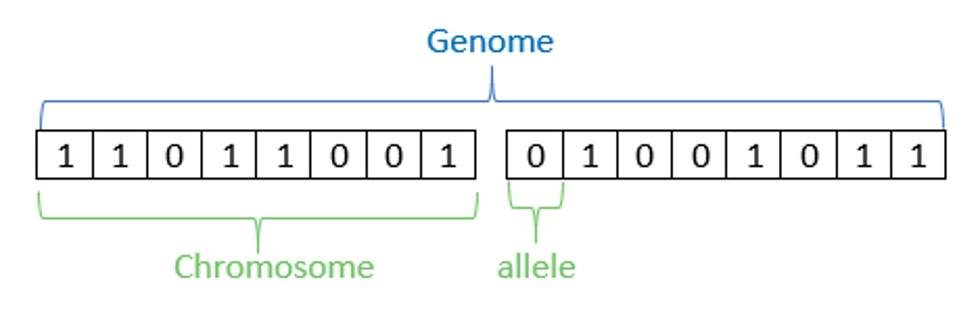
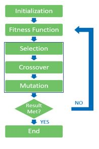

Introduction
Content
What are Genetic Algorithms? Example Applications Workshop
Content Owner: Eduardo Gamboa Mentor: Eduardo Gamboa
Objective
Learn how Genetic algorithms work and how to implement them. Be able to explain in simple words what is a GA. Learn what are they used for and when to use it. Experiment working with the algorithm.
What are Genetic Algorithms?

Why?
Polar bears adapted, at the beginning, living in the snow was no easy task for a grizzly as its fur could be seen from the distance, alarming its prey and making it harder for him to eat, with time, polar bears started to survive more over its brown relative, they could camouflage better in snow, so hunting was easier. Many generations later, grizzlies started to perish in the snow, making them rarer and rarer until their population disappeared, leaving only polar bears, who were at first the minority, the only survivors. GA follows the same principle as natural selection, giving preference to those with the capabilities to adjust better to the environment, in other words, gives preference to the fittest. So that with every generation, the species evolve and adapt. GAs were designed as an abstraction of nature, to mimic this process and achieve what life has done in a relatively short period, into a much shorter time.
What?
The genetic Algorithm is a heuristic search method used in artificial intelligence and computing. It is used for finding optimized solutions to search problems, this solution is found using a fitness function or error function, which lets decide the aptitude of an individual, based in the objective trying to achieve.
How do they work?

GAs are based in the individuals, which conform the whole population, each individual has its genome, made up of chromosomes, each chromosome is, at the same time, made up of alleles. People for example, our phenotype is all of our characteristics, everything visible such as the color of our eyes or hair, but also includes your overall health, whether you are propense to a disease or not, and the genotype is all of our genetic code, your heritable genetic identity, meaning the genotype is an important part of the phenotype, but not all of it.
Process

After defining the individual, which is defined based in our objective function, we create our population. Compare each individual with the fitness function, and sort the population based in its aptitude, which will be needed to move on to the selection of the parents. Select sets of two parents, giving preference to the fittest. Each pair will reproduce and help create two new individuals(children). To maintain certain randomness, we include a term called mutation. Mutation means that sporadically, one individual might suffer a change in its genome, usually swapping a bit’s value. After all population has been renewed, which would mean that a new, full generation was created, this process is repeated until our population converge, or the result expected was met.